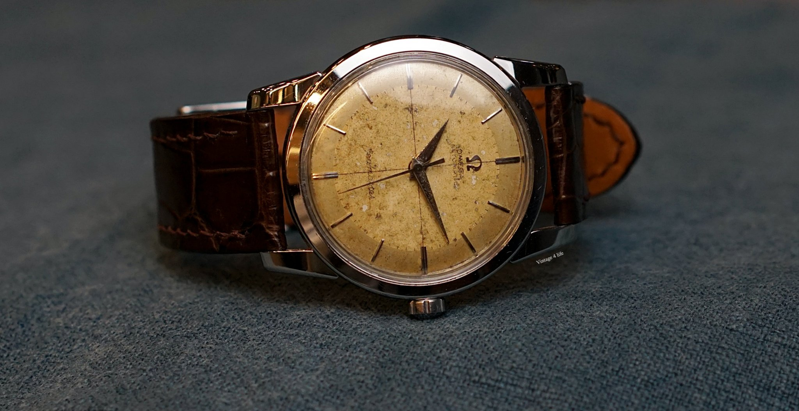

True luxury is never measured by ownership alone—it is measured by how beautifully it is preserved. Welcome to the definitive 50 Mirars editorial, where fifty timeless rituals celebrate watches, sunglasses, and the quiet discipline behind exceptional craftsmanship.
Every remarkable collection begins with a philosophy before it becomes a habit.
01. The Philosophy of Ownership
Luxury ownership begins long before a watch touches your wrist or sunglasses meet your eyes. It begins with respect for craftsmanship, patience in everyday habits, and appreciation for details that others often overlook.
The world's finest collections remain beautiful not because they avoided life—but because they were cared for throughout it.
02. The Ritual of First Wear
Before wearing any premium piece for the first time, remove protective films carefully, inspect every finish, and preserve the original packaging. The beginning of ownership deserves as much attention as every chapter that follows.
03. Morning Preparation
Every exceptional day begins with small rituals. Wipe away overnight dust, ensure your watch crown is secure, and let your chosen piece become part of your confidence before leaving home.
04. Respecting Leather
Leather rewards gentle ownership. Allow straps to breathe naturally after wearing, protect them from unnecessary moisture, and let character develop through graceful aging instead of premature wear.
Collector's Note: Never dry premium leather with direct heat.
05. The Quiet Power of Microfiber
One clean microfiber cloth quietly outperforms countless alternatives. Removing oils and fingerprints daily preserves polished finishes before residue has time to settle.
06. Protecting Polished Steel
Luxury steel is remarkably durable, yet unnecessary friction gradually softens crisp edges. Lift your wrist naturally while working instead of allowing constant contact with hard surfaces.
07. The Collector's Environment
A cool, dry environment quietly protects delicate materials from unnecessary stress. Thoughtful storage becomes one of the most powerful investments in long-term preservation.
08. Traveling With Confidence
Luxury deserves protection wherever life leads. Dedicated travel pouches prevent unnecessary pressure, vibration, and scratches between destinations.
09. Invisible Magnetic Fields
Modern life surrounds us with electronics. While many watches include protection against magnetism, minimizing unnecessary exposure remains one of the simplest habits for preserving consistent performance.
10. Respect Before Speed
The crown is one of the most important components of any watch. Gentle adjustments and proper closure protect the precision hidden beneath every polished surface.
Luxury rewards patience more than force.
Professional Tip: Always ensure the crown is fully secured after adjusting the time.
The Language of Preservation
Luxury reveals itself through habits that become almost invisible. These next chapters explore the quieter rituals that transform ownership into legacy.
11. The Language of Patina
The most admired luxury pieces rarely remain frozen in time. Instead, they develop a graceful patina—a natural character earned through careful ownership rather than neglect.
The goal is not to erase every sign of life, but to allow beautiful aging while preventing unnecessary damage.

12. The Collector's Workspace
Desks quietly become one of the greatest hidden risks for luxury pieces. Hard surfaces, keyboards, and sharp edges create countless opportunities for avoidable contact.
A soft desk mat and mindful placement protect elegance during everyday work without changing your routine.
Collector's Note: Lift your wrist naturally instead of sliding polished cases across hard surfaces.
13. Precision in Motion
Every mechanical movement is designed to work with natural rhythm rather than force. Comfortable wear allows the movement to perform exactly as its engineers intended.
Luxury often feels effortless because invisible mechanics quietly perform beneath polished surfaces.
14. The Value of Original Accessories
Boxes, warranty cards, manuals, protective pouches, and presentation materials are more than packaging—they become part of the ownership story.
Keeping these accessories safe preserves both presentation and long-term collectability.
15. Protecting Decorative Details
Engravings, polished bezels, crown logos, and signature accents define the identity of luxury craftsmanship.
Gentle handling preserves these refined details far better than aggressive polishing after years of wear.
Professional Tip: Clean around engraved areas gently rather than applying excessive pressure.
16. Understanding Water Resistance
Water resistance deserves respect rather than assumptions. Seals naturally age over time, meaning careful ownership includes understanding the limitations of every timepiece.
Never operate crowns or pushers underwater unless the watch is specifically designed for that purpose.
17. The Art of Rotation
Collectors rarely wear the same piece every day. Rotating watches allows each movement to remain part of everyday life while reducing unnecessary wear on any single favorite.
Balance often preserves beauty better than constant repetition.
18. The Luxury Travel Companion
Whether traveling across cities or continents, organized storage keeps luxury protected without sacrificing elegance.
The finest collectors prepare before departure rather than repairing after arrival.
Collector's Note: Separate multiple watches inside individual travel pouches instead of allowing bracelets to touch.
19. Respecting Mechanical Silence
When an automatic watch stops after resting, it is simply waiting—not failing. Stored energy naturally fades when unworn, and thoughtful winding restores its rhythm gently.
Understanding this quiet pause becomes part of appreciating mechanical craftsmanship.
20. Evening Preservation
The final moments of every day deserve the same attention as the first. Returning your watch to its proper place and storing your sunglasses inside their protective case quietly completes the ownership ritual.
Luxury is not only worn beautifully—it is put away beautifully.
50 Mirars Philosophy: The most valuable care routine is the one you repeat every single day.
Luxury Eyewear Excellence
If watches celebrate the precision of time, premium eyewear celebrates the precision of vision. Every polished frame and every flawless lens deserve the same quiet discipline that preserves the world's finest timepieces.
21. The Architecture of Vision
Luxury sunglasses begin with balance. Every curve, every hinge, and every lens is engineered to work together, creating comfort that feels effortless throughout the day.
Exceptional eyewear is not simply designed to be seen—it is designed to disappear into confidence.
22. Cleaning Without Compromise
The greatest mistake owners make is wiping dusty lenses immediately. Tiny particles trapped between fabric and glass can create microscopic scratches that gradually reduce optical perfection.
Instead, allow clean water to remove loose debris before using a premium microfiber cloth designed specifically for optical lenses.
Professional Tip: Never clean premium lenses with tissues, paper towels, or clothing.
23. The Science of Lens Coatings
Modern luxury lenses often feature advanced coatings that improve comfort, reduce glare, and preserve visual clarity. These microscopic layers deserve gentle treatment because their performance depends on careful ownership.
Dedicated optical cleaning products protect these invisible innovations without compromising their finish.
24. Frame Geometry
Premium frames are carefully balanced to distribute weight evenly across the face. Removing sunglasses with one hand repeatedly places uneven pressure on hinges and temples over time.
Using both hands preserves alignment while maintaining long-term comfort.
25. The Invisible Enemy
Heat quietly shortens the life of luxury eyewear. A hot vehicle, direct sunlight, or excessive temperatures can gradually affect frame alignment and reduce the longevity of premium finishes.
Thoughtful storage protects craftsmanship before damage ever begins.
Collector's Note: Never leave premium sunglasses inside a hot car for extended periods.
26. The Importance of Hinges
Every opening and closing movement depends on precision engineering designed for smooth, controlled motion. Forcing temples beyond their natural range introduces unnecessary stress into one of the hardest-working parts of premium eyewear.
Gentle movement protects elegance for years.
27. The Luxury Travel Companion
Luxury eyewear deserves the same level of protection while traveling as it receives at home. A structured hard case dramatically reduces pressure damage, scratches, and unexpected impacts throughout every journey.
Prepared collectors rarely leave protection to chance.
28. Preserving Signature Finishes
Polished metal, brushed textures, matte coatings, and premium acetate all deserve thoughtful handling. Avoid placing sunglasses face-down, even on seemingly soft surfaces, because unnecessary pressure gradually affects delicate finishes.
Respect for small details preserves remarkable first impressions.
Professional Tip: Rest sunglasses with folded temples instead of placing the lenses directly against a surface.
29. The Collector's Reflection
The finest eyewear collections are admired because their owners develop consistent habits rather than occasional deep-cleaning routines. Quiet discipline becomes visible through flawless presentation.
Luxury often speaks most clearly through what never needed repair.
30. Vision Becomes Legacy
Whether measured through the precision of a luxury watch or the clarity of premium eyewear, exceptional craftsmanship shares one timeless truth—it rewards careful ownership.
At 50 Mirars, luxury is not simply worn. It is preserved with intention, patience, and pride.
50 Mirars Philosophy: Every flawless lens reflects the care invested long before someone notices its shine.
The Collector's Lifestyle
Luxury is shaped by everyday decisions as much as extraordinary moments. These chapters explore how environment, routine, travel, and confidence become part of preserving exceptional craftsmanship.
31. The Dress Code of Time
A remarkable watch deserves thoughtful pairing with the occasion. Formal evenings, business meetings, weekend escapes, and everyday moments each invite a different expression of elegance.
The world's finest collectors choose with intention rather than habit, allowing every piece to feel naturally at home.
32. Rain & Responsibility
Unexpected weather reminds every collector that luxury and responsibility belong together. If your watch or sunglasses encounter moisture, drying them gently before storage helps preserve finishes and delicate materials.
Protection begins with calm reactions rather than rushed decisions.
Collector's Note: Allow pieces to dry naturally before returning them to closed storage.
33. Seasonal Rotation
Collections often evolve with the seasons. Lightweight eyewear feels at home beneath summer skies, while classic timepieces quietly complement cooler months with timeless confidence.
Seasonal awareness allows every piece to remain part of your story throughout the year.
34. The Luxury Workspace
Workspaces become daily stages where luxury quietly accompanies productivity. Keeping polished cases away from rough desk edges and protecting eyewear during focused work preserves beauty without interrupting performance.
Professional environments reward thoughtful preparation.
35. Protecting Gold-Tone Finishes
Gold-tone details deserve gentle ownership because their elegance lies in flawless presentation. Avoid unnecessary friction against metal accessories, jewelry, and hard surfaces whenever possible.
Careful handling allows every golden reflection to remain beautifully refined.
Professional Tip: Separate gold-tone pieces from other accessories during storage whenever practical.
36. The Art of Travel Packing
Packing becomes part of luxury ownership long before the journey begins. Individual travel pouches, protective cases, and organized placement reduce unnecessary pressure throughout every destination.
The finest journeys begin with thoughtful preparation.
37. Collecting Through Milestones
Luxury pieces quietly become companions to life's most meaningful moments—graduations, promotions, celebrations, travels, and unforgettable evenings.
Protecting those pieces also protects the memories they gradually come to represent.
38. The Signature of Confidence
The most elegant collectors rarely chase attention. Confidence grows naturally when every detail—from polished crystal to perfectly aligned frames—reflects quiet consistency.
Luxury becomes most powerful when it feels effortless.
50 Mirars Philosophy: Confidence begins long before someone notices what you're wearing.
39. The Collector's Perspective
Exceptional collections are built slowly rather than quickly. Every carefully preserved piece contributes to a personal story that becomes richer with patience, experience, and thoughtful ownership.
Luxury rewards long-term vision far more than short-term excitement.
40. The Signature of Legacy
By this stage of the journey, luxury has become more than an object—it has become a discipline. Every careful habit quietly contributes to a legacy that future memories will recognize through beautifully preserved craftsmanship.
The greatest collections are remembered because their owners respected every chapter along the way.
Collector's Reflection: Every legacy begins with one beautifully protected piece.
The Legacy of Luxury
The final chapters celebrate the quiet philosophy behind lasting elegance—where ownership becomes legacy, and every detail earns its place through patience and pride.
41. The Quiet Signature
Luxury rarely announces itself loudly. It reveals itself through immaculate details, thoughtful habits, and a confidence that never needs to compete for attention.
The quiet signature of elegance is often the most memorable one.
42. The Collector's Ritual
Every collector eventually develops a personal routine—opening the watch box slowly, unfolding a microfiber cloth, checking a polished crystal, or placing sunglasses carefully inside their case.
These rituals become part of the luxury experience itself.
43. Confidence in Every Reflection
Polished surfaces reflect more than light—they reflect the care invested by their owner. Beautiful finishes become lasting signatures of thoughtful ownership rather than accidental perfection.
44. Beyond Ownership
A remarkable collection eventually becomes something greater than individual products. It becomes a personal expression of taste, discipline, and appreciation for timeless craftsmanship.
Collector's Note: The finest collections are remembered because they were respected consistently.
45. Preserving Tomorrow
Every careful decision made today protects tomorrow's admiration. The smallest habits quietly shape how luxury will be experienced years from now.
46. Prepared Ownership
Collectors who prepare before wearing, traveling, or storing their pieces enjoy luxury with greater confidence and fewer worries.
Prepared ownership transforms ordinary routines into exceptional experiences.
47. Every Collection Has a Story
Each carefully preserved piece quietly records milestones, travels, celebrations, and everyday moments. Caring for luxury means preserving memories as much as materials.
48. Timeless Discipline
Discipline often becomes invisible over time. What begins as a deliberate habit eventually becomes effortless confidence, allowing craftsmanship to remain beautifully protected without interrupting everyday life.
Professional Tip: Consistency always preserves luxury better than occasional perfection.
49. The Future Collector
Every great collector begins somewhere. Whether your collection holds one remarkable piece or many unforgettable ones, careful ownership allows every chapter to become more meaningful than the last.
50. The Legacy of Luxury
The world's finest collections endure because their owners valued preservation as highly as acquisition. Every polished case, every flawless lens, and every carefully protected finish becomes part of a legacy built through patience, consistency, and pride.
At 50 Mirars, luxury is never simply worn—it is preserved for every chapter that follows.
The 50 Mirars Promise
Every exceptional piece carries a responsibility beyond ownership.
More Than a Purchase
Every watch and every pair of sunglasses selected by 50 Mirars represents confidence, elegance, and timeless design. Our commitment continues beyond delivery through the care habits that help your collection remain beautiful for years.
Luxury should feel rewarding every time you wear it, every time you open its box, and every time someone notices the details that careful ownership quietly preserves.
The Collector's Commandments
Twenty timeless habits that define exceptional ownership.
01
Clean your watch after every wear.
02
Store every watch inside a soft-lined box.
03
Protect leather from unnecessary moisture.
04
Respect water-resistance limitations.
05
Keep watches away from strong magnetic fields.
06
Rotate watches thoughtfully.
07
Never place sunglasses face-down.
08
Use both hands with premium eyewear.
09
Store sunglasses inside protective cases.
10
Protect lenses from household chemicals.
11
Avoid excessive heat inside vehicles.
12
Travel with dedicated protective pouches.
13
Inspect hinges and crowns regularly.
14
Protect polished finishes from friction.
15
Preserve original boxes and accessories.
16
Handle luxury with patience rather than force.
17
Build habits instead of relying on repairs.
18
Respect craftsmanship every day.
19
Let elegance age gracefully.
20
Protect tomorrow through today's discipline.
50 Mirars Luxury Collection
Preserve Today. Inspire Tomorrow.
Every exceptional piece tells a story. Continue exploring luxury watches and premium sunglasses curated for timeless confidence.